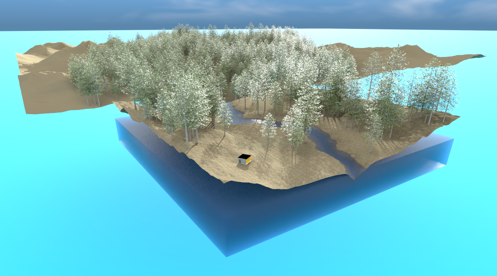
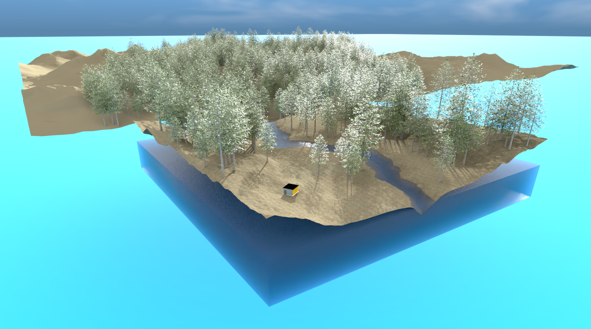

My Favourite Blender Project
Blender is a free and open-source 3D graphics software tool, and is used for creating animated films, art, 3D-printed models, and video games. I have over 400 hours of experience in Blender and I am still learning new things every day. I hope to learn more about rigging and animation in the future. Here is the project I am most proud of.
Project Overview
This project showcases my ability to create realistic 3D models and textures. I put great detail into every aspect of the project, from the lighting to the materials, and rendering to achieve a professional and finished look. The scene includes a hexagonal desk of my own design inside a small office style building, a beautiful river scenery surrounding the building, and a character model I tweaked and rigged.


The landscape
The landscape surrounding the building is a beautiful river scenery, with a river flowing through and trees and grasses lining the banks. I used custom trees with hexagonal leaves as a small easter egg to my desk design. My landscape is made up entirely of 8K textures to ensure the highest quality possible. I also have a middleground and a sky dome to add depth to the scene. The sky dome is a simple blue gradient with a few clouds, but does add a lot to the scene. The scatter of the trees is done with a particle system to ensure that no two trees are the same and are scattered naturally. The grass is a package I found online that I used to add even more realism to the scene. I used a particle system to scatter the grass.
 

Evaluation
I noticed while doing this project that random artifacts from my lighting engine surfaced. This could have been caused by my limited knowledge of the software when I was starting out, as the landscape was one of the first parts I did. Since I was showcasing the desk, I likely did not need to create an entire scene around the building and character. Due to the amount of detail and time I put into the project and desk especially, the render time was ten hours for 4096 samples for each of the desk images. I am very pleased in what I accomplished and I am proud of the final result. I have learned a lot about Blender and 3D modelling in general, and I hope to continue learning and improving my skills.